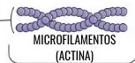
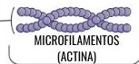

Imagine o interior de uma célula viva como uma metrópole vibrante e complexa, pulsando com atividade incessante. Ruas movimentadas, estruturas imponentes e um sistema de transporte eficiente são essenciais para o seu funcionamento. Surpreendentemente, no mundo microscópico das nossas células, existe uma contraparte dessa organização urbana: o citoesqueleto.
A Célula como uma Metrópole: Desvendando o Citoesqueleto
Microtúbulos: As Rodovias da Célula
Assim como as rodovias de uma cidade são essenciais para o fluxo de pessoas e mercadorias, os microtúbulos atuam como as principais vias de transporte dentro da célula, permitindo a circulação de substâncias e organelas de um ponto a outro.
Na célula, os microtúbulos são cilindros ocos formados por dímeros de tubulina, responsáveis pelo transporte intracelular de vesículas, posicionamento de organelas e formação do fuso mitótico durante a divisão celular.
Filamentos de Actina: As Calçadas da Dinâmica Celular
 ↔

↔

Se as rodovias são para o tráfego principal, os filamentos de actina seriam as calçadas e ruas menores, permitindo movimentos mais localizados e mudanças rápidas na forma da célula, como a movimentação de pedestres e pequenos veículos.
Na célula, os filamentos de actina são os mais finos e estão envolvidos na movimentação celular, contração muscular (em células musculares) e na manutenção da forma da célula, especialmente na sua periferia, logo abaixo da membrana plasmática.
Filamentos Intermediários: Os Pilares da Integridade Celular
 ↔
↔

Assim como os edifícios e as estruturas de suporte conferem estabilidade e sustentação a uma cidade, os filamentos intermediários atuam como os pilares da célula, proporcionando resistência mecânica e ajudando a manter a integridade estrutural.
Na célula, os filamentos intermediários são mais robustos e compostos por diversas proteínas, dependendo do tipo celular. Eles têm uma função primária de conferir resistência a tensões mecânicas e ajudar a ancorar organelas, como o núcleo, dentro do citoplasma.
Por Dentro da Célula: Uma Visão Detalhada do Citoesqueleto
Assim como uma cidade possui uma infraestrutura complexa que sustenta suas atividades, a célula eucariótica conta com o citoesqueleto, uma rede dinâmica e altamente organizada de filamentos proteicos presente em seu citoplasma. Essa rede é fundamental para diversas funções, desde a manutenção da forma celular até o transporte interno e a organização espacial.
Os Microtúbulos: As "Rodovias" Moleculares
Os microtúbulos são polímeros longos e ocos, formados por subunidades da proteína tubulina. Assim como as grandes avenidas e rodovias de uma cidade, eles atuam como as principais vias de transporte dentro da célula. Possuem polaridade, com extremidades positiva e negativa, que direcionam o movimento de moléculas e organelas. Além do transporte intracelular, os microtúbulos são cruciais na formação do fuso mitótico durante a divisão celular, garantindo a separação precisa dos cromossomos.
Os Filamentos de Actina: A Dinâmica "Pavimentação" Celular
Os filamentos de actina, também conhecidos como microfilamentos, são polímeros finos e flexíveis da proteína actina. Concentrados principalmente na periferia da célula, como as calçadas e ruas menores de uma cidade, eles estão envolvidos em movimentos celulares mais localizados e na manutenção da forma. São essenciais para processos como a contração muscular (em células musculares), a formação de pseudópodes para o movimento de células como amebas, a endocitose (internalização de materiais pela célula) e a sustentação da membrana plasmática.
Os Filamentos Intermediários: A "Arquitetura" de Sustentação
Os filamentos intermediários são estruturas fibrosas mais estáveis e resistentes à tensão mecânica, funcionando como os edifícios e pilares que dão suporte à estrutura geral de uma cidade. Diferentemente dos microtúbulos e filamentos de actina, não possuem polaridade e são formados por uma variedade de proteínas, como a queratina (encontrada em células epiteliais, como as da pele) e a vimentina (presente em fibroblastos, um tipo de célula do tecido conjuntivo). Sua principal função é fornecer resistência estrutural e ancorar organelas, como o núcleo, dentro do citoplasma.
Além de suas funções mecânicas e de transporte, o citoesqueleto participa ativamente da sinalização celular, interagindo com diversas vias moleculares e influenciando processos como o crescimento, a diferenciação e a resposta a estímulos externos. A capacidade do citoesqueleto de se remodelar constantemente, através da montagem e desmontagem de seus filamentos, permite que a célula se adapte rapidamente a mudanças no ambiente e realize suas complexas funções de maneira eficiente.
Em síntese, o citoesqueleto é uma infraestrutura essencial para a vida da célula eucariótica, atuando como um sistema de suporte, transporte e organização que possibilita a complexidade e o dinamismo dos processos celulares, de forma análoga à infraestrutura que sustenta uma cidade.
Quem Somos
Este projeto, intitulado "Citoesqueleto em Cena: A Cidade Dentro da Célula", foi desenvolvido como parte das atividades da disciplina de Bases Biológicas da Psicologia do curso de Psicologia. Somos estudantes dedicados a explorar as fascinantes interconexões entre a biologia e o comportamento humano.
Conheça os integrantes deste projeto:
- Carolina Aparecida Leopoldino Da Silva
- Gabriela Moreira Alves Florêncio
- Gabriela Teixeira Miranda
- Gleisa Carvalho da Costa
- Karina Francia Fernandes Silva
- Maria Eduarda Lima De Melo
- Rosenilda dos Santos lima
- Tamires Sevieri Chagas
- Thais Aredes Lucas
- Tatiane Moschella de Oliveira